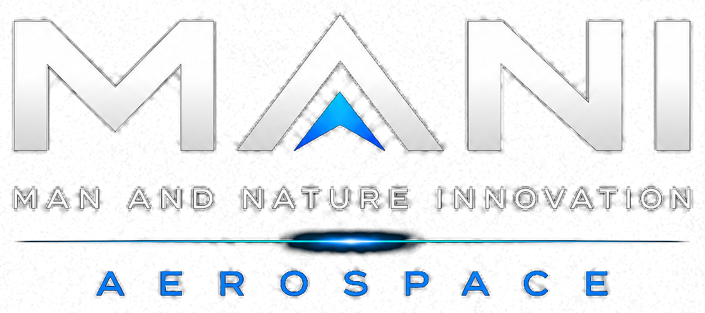

MANI AEROSPACE
TARGET OF 2036 | FLIGHT DYNAMICS
FREE ORBIT
CHASE CAM
SURVEILLANCE
FPV SENSOR
2036 FLIGHT DYNAMICS
LOCK: ACQUIRED
TARGET (KEY 1-7):
MASS
MISSION ARCHITECTURE:
Flagship Habitat & Dock
ORBIT REGIME / ALT:
420 km LEO
ORBITAL VELOCITY:
7.67 km/s
INCLINATION (i):
51.64°
TARGET 2036 OBJECTIVE:
Zero-G Biosphere Hub
TACTICAL FLEET SELECTOR
CLICK 3D / HUD
[1-7]
Quick Asset Lock
[C]
Cycle Camera Mode
[SPACE]
Pause / Resume
[ [ / ] ]
Time Warp Adj.
[L]
Toggle Laser Comms
WARP:
1.0x
PAUSE
LASERS: ON
FLEET ▾